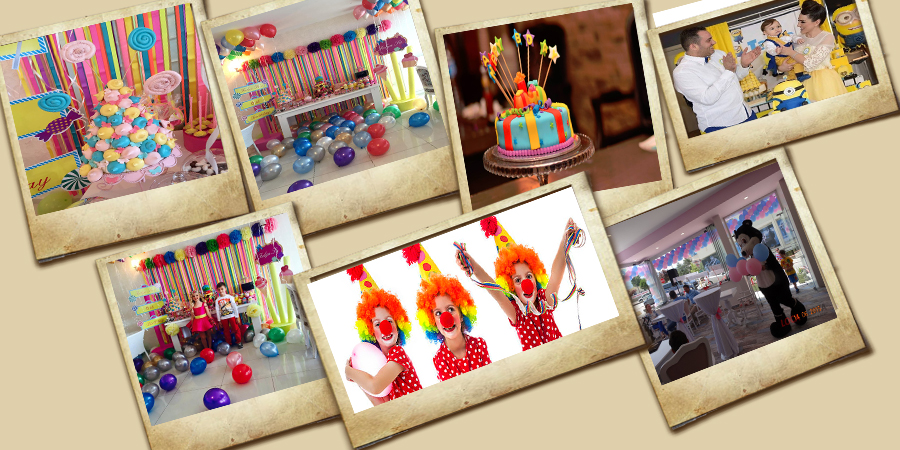

|  |
DOĞUM GÜNLERİ
The Colorful Cafe, doğum gününü sevdikleriyle, keyifli bir ortamda kutlamak isteyen misafirlerinin de yanında. Farklı menü alternatifleriyle tamamen sizin tercihlerinize uygun bir kutlama için tek yapmanız gereken aklınızdan geçeni bizimle paylaşmak.
ÇOCUK DOĞUM GÜNLERİ
Çocuk doğum günlerini organize etmek her zaman daha zordur. Anne-babalar herşeyin mükemmel geçmesi için o kadar çok uğraşırlar ki nasıl geçtiğini anlayamadan gün biter. The Colorful Cafe, anne-babaların bu özel günleri doyasıya kutlayabilmeleri için detaylarla uğraşma görevini üzerine alıyor. Farklı büyüklükteki gruplar ve değişik menü alternatifleri için thecolorfulcafe@thecolorfulcafe.com.tr adresine eposta gönderebilirsiniz.
DÜĞÜN
Küçükçekmece'nin göbeğinde, zemini gemi güvertesini andıran, etrafı yeşilliklerle çevrili muhteşem saklı bir bahçe içerisinde evlenmek ister misiniz? Cevabınız evet ise o zaman The colorful Cafe'yi görmenizi öneririz. The Colorful Cafe geçtiğimiz senelerde gerçekleştirdiği başarılı organizasyonlarda adını bir hayli duyurur oldu. Mekanda 150 kişiye kadar yemekli 400 kişiye kadar kokteyl yada kokteyl prolonje gerçekleştirme imkanımız var. Akşamüstü güneşin son ışıklarıyla bahçede hoş bir atmosferde başlayan düğününüz gecenin ilerleyen saatlerinde yerini muhteşem yemeklere ve bir partiye bırakabilir. Etrafınızda yanan meşaleler, loş ışıklarla ışıklandırılmış ağaçlar ve harika bir atmosferde, makul fiyatlarla, İstanbul'un göbeğinde, İstanbul dışında bir havada evlenmek, nişanlanmak istiyorsanız, hiç düşünmeden The Colorful Cafe'yi hemen arayın!
TOPLANTI
Şirket toplantılarınız için The Colorful Cafe'nin üst katı hazır. Günün dilediğiniz saatinde farklı ikram seçenekleriyle sunumlarınızı etkileyici bir biçimde yapabilir, toplantılarınızı daha verimli bir biçimde geçirebilirsiniz.
ÖZEL GÜNLER
The Colorful Cafe, Sevgililer Günü, Anneler Günü ve Babalar Günü gibi herkes için özel olan günlerin yanı sıra sizin için özel olan günlerde de yanınızda. Belki çok sevdiğiniz bir arkadaşınızla küçük bir kutlama, belkide ilk randevunuzda da The Colorful Cafe'de buluştuğunuz kız arkadaşınıza evlilik teklifi... Sizin için özel olan hergün bizim içinde özeldir. Çünkü; "Biz Sizinle Mutluyuz!".
Ve ayrıca dev ekranda maç keyfi.